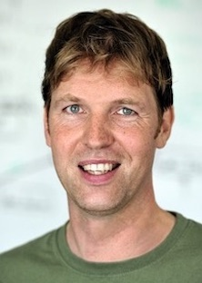
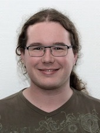

Kristof Van Laerhoven
ProfessorOffice: H-A 8110, Faculty 4, Hölderlinstrasse 3, University of Siegen
Tel: +49 (0)271 740-2312

Dagmar Rautmann
SecretaryOffice: H-A 8111, Faculty 4, Hölderlinstrasse 3, University of Siegen
Tel: +49 (0)271 740-3037
Christoph Schlechtingen
Technical AdministratorOffice: H-A 8102, Faculty 4, Hölderlinstrasse 3, University of Siegen
Tel: +49 (0)271 740-2315
Steffen Jaschke
Acad. Council, Computer Science EducationOffice: H-E 216, Faculty 4, Hölderlinstrasse 3, University of Siegen
Tel: +49 (0)271 740-2665

Alexander Hölzemann
PhD Student / Research AssociateOffice: H-A 8105, Faculty 4, Hölderlinstrasse 3, University of Siegen
Tel: +49 (0)271 740-2829

Jonas Poehler
PhD Student / Research AssociateOffice: H-A 8114, Faculty 4, Hölderlinstrasse 3, University of Siegen
Tel: +49 (0)271 740-2312

Marius Bock
PhD Student / Research AssociateOffice: H-A 7116, Faculty 4, Hölderlinstrasse 3, University of Siegen
Tel: +49 (0)271 740-5212

Robin Burchard
PhD Student / Research AssociateOffice: H-A 8114, Faculty 4, Hölderlinstrasse 3, University of Siegen
Tel: +49 (0)271 740-2312

Atikkhan Nilgar
PhD Student / Research AssociateOffice: H-A 8105, Faculty 4, Hölderlinstrasse 3, University of Siegen
Tel: +49 (0)271 740-2829

Daniel Henn
PhD Student / Research AssociateOffice: H-A 8106, Faculty 4, Hölderlinstrasse 3, University of Siegen
Tel: +49 (0)271 740-5504

Daniel Kurzer
PhD Student / Research AssociateOffice: H-A 8106, Faculty 4, Hölderlinstrasse 3, University of Siegen
Tel: +49 (0)271 740-5504
Nahshon Mokua Obiri
PhD Student / Research AssociateOffice: H-A 8105, Faculty 4, Hölderlinstrasse 3, University of Siegen
Tel: +49 (0)271 740-2829

Zeyneddin Oz
PhD Student / Research AssociateOffice: H-A 8116, Faculty 4, Hölderlinstrasse 3, University of Siegen
Tel: +49 (0)271 740-????

Michael Brilka
PhD Student / Research AssociateOffice: H-A 8115, Faculty 4, Hölderlinstrasse 3, University of Siegen
Tel: +49 (0)271 740-????
Christina Nicolaou
External PhD StudentRobert Bosch GmbH, Zentrum für Forschung und Vorausentwicklung, Robert-Bosch-Campus 1, Renningen
Anke Fischer-Janzen
External PhD StudentOffice CW0.06.2, Max-Planck-Straße 1, 77656 Offenburg, HS-Offenburg
Tel: 0781 205-1127
Nadine Flegel
External PhD StudentOffice: Building X | Room 2 Schneidershof, 54293 Trier, HS Trier, FB Informatik